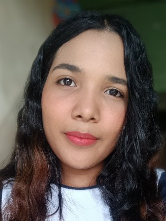

Marycarol Viviana Briceño Ramos | WDD 130
Hello, my name is Marycarol Viviana Briceño Ramos. I was born in Caracas. Currently, I am living in Maracaibo, Venezuela. I am the middle child of three girls, and I also have an older brother. A perfect day to me includes listening to music, spending time with my family, and I enjoy pretty much outdoor activities, so I try every day to go biking, take long walks, or go to the park with my dog. I am an animal lover, and I currently have one dog and two cats, all of whom I've adopted. While I would love to adopt more animals, unfortunately, I don't have enough space to accommodate them all. That's why one of my goals is to create a foundation that can care for and provide homes to as many animals as possible. Another interesting thing about me is that, despite the fact that my first language is Spanish, I am currently improving my English. I would also like to learn other languages, such as French and Portuguese, but I first want to learn English perfectly. I love learning, which is why I am now studying programming. My goal is to learn web development and become a proficient web developer.